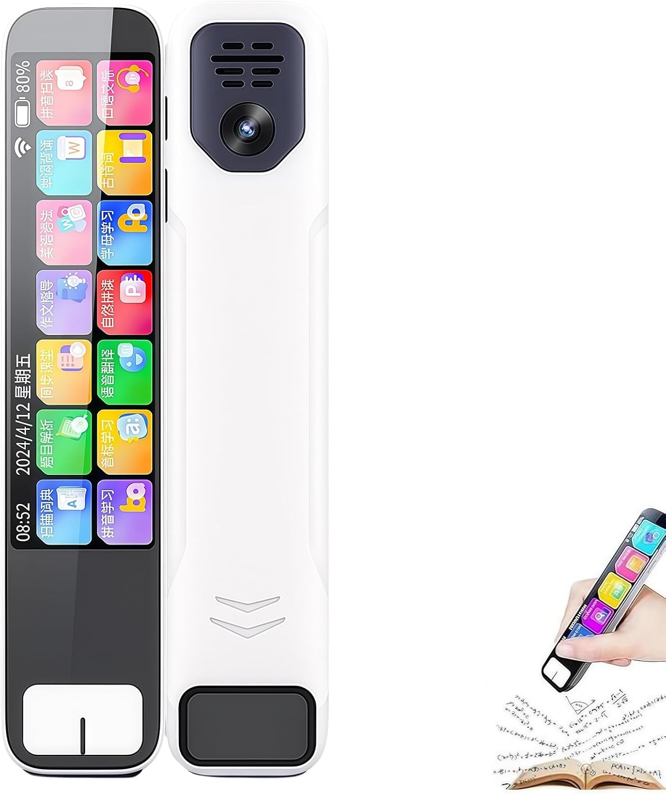
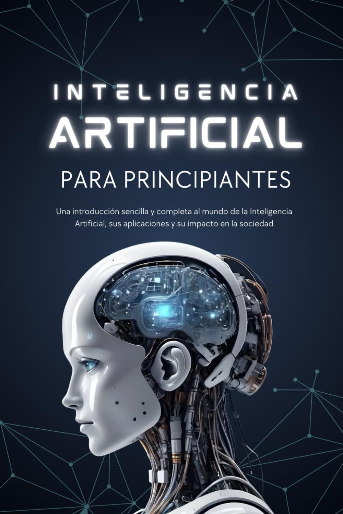
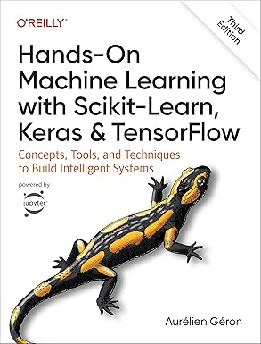
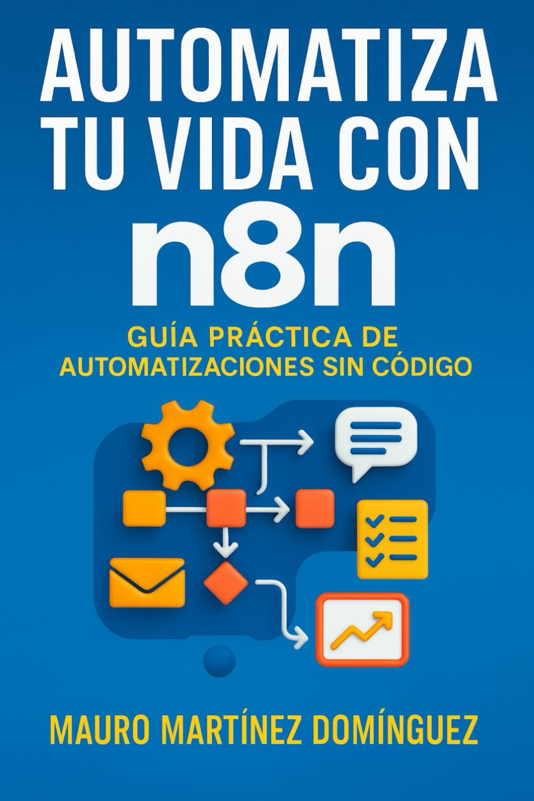
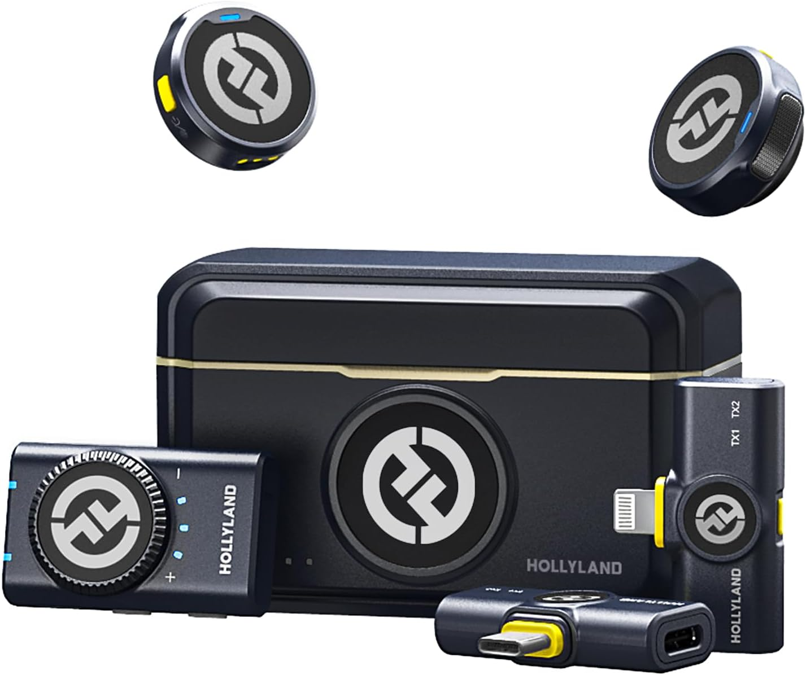
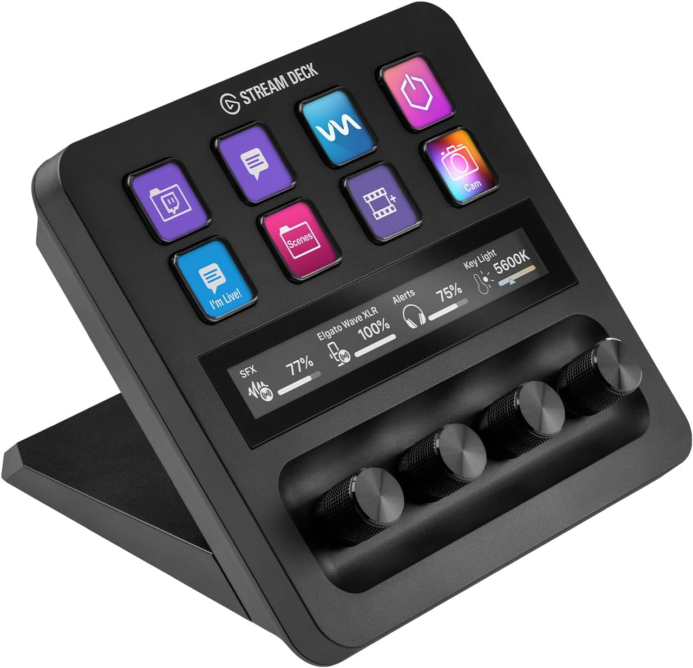
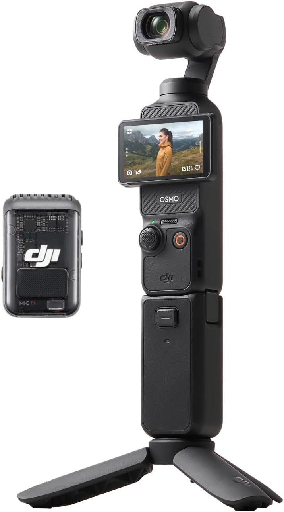
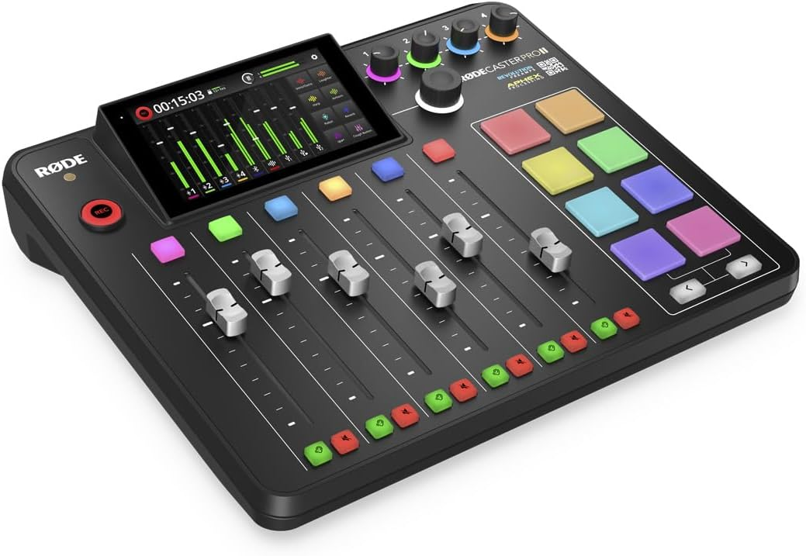

Para empezar
Para empezar
Libro introductorio sobre inteligencia artificial
Ideal para personas que quieren entender la IA desde cero, sin entrar directamente en explicaciones demasiado técnicas.
Ver en AmazonSelección de libros, dispositivos, accesorios y recursos útiles para aprender inteligencia artificial, automatizar tareas, crear contenido y mejorar tu productividad digital.
Para empezar
Ideal para personas que quieren entender la IA desde cero, sin entrar directamente en explicaciones demasiado técnicas.
Ver en Amazon Creación de contenido
Creación de contenido
Recomendado para grabar contenidos, formaciones o vídeos sobre IA con una calidad de audio más profesional.
Ver en Amazon Productividad
Productividad
Graba reuniones, convierte el audio en texto y genera resúmenes automáticamente gracias a la inteligencia artificial. Una herramienta práctica para ahorrar tiempo, organizar ideas y no perder información importante.
Ver en Amazon Dispositivos IA
Dispositivos IA
Gafas inteligentes con funciones de traducción en tiempo real, asistentes IA y control por voz. Un ejemplo interesante de cómo la inteligencia artificial empieza a integrarse en dispositivos cotidianos y experiencias manos libres.
Ver en Amazon Dispositivos IA
Dispositivos IA
Auriculares con inteligencia artificial capaces de traducir conversaciones en tiempo real entre múltiples idiomas. Un ejemplo práctico de cómo la IA empieza a eliminar barreras de comunicación en viajes, reuniones y trabajo internacional.
Ver en Amazon Dispositivos IA
Dispositivos IA
Descubre anillos inteligentes y wearables con inteligencia artificial capaces de monitorizar sueño, actividad física, estrés y salud en tiempo real. Tecnología futurista aplicada a productividad, bienestar y automatización personal.
Ver en Amazon Dispositivos IA
Dispositivos IA
Descubre el PLAUD NotePin, un wearable ultraligero de solo 16,7 gramos capaz de grabar conversaciones, transcribir reuniones y generar resúmenes automáticos mediante inteligencia artificial. Ideal para productividad, notas y automatización personal en tiempo real.
Ver en Amazon
Dispositivos IA
Un avanzado bolígrafo inteligente con
inteligencia artificial capaz de
escanear textos, realizar
traducciones en tiempo real y ofrecer
funciones inteligentes mediante tecnología tipo
ChatGPT.
Este gadget futurista
incorpora pantalla táctil HD, reconocimiento
OCR, traducción multilenguaje y herramientas
ideales para estudiantes, productividad, trabajo y
viajes.
✔ Escaneo inteligente OCR
✔ Traducción instantánea multilenguaje
✔ Funciones IA tipo ChatGPT
✔ Pantalla táctil integrada
✔ Gadget tecnológico futurista

IA básicaLibro recomendado para iniciarse en la inteligencia artificial de forma clara y accesible. Ideal para personas que quieren entender qué es la IA, cómo funciona y cómo puede aplicarse en el trabajo, la automatización y la vida cotidiana.
Ver en Amazon
ProgramaciónEste libro es ideal para dar el salto desde Python básico al mundo de la inteligencia artificial. Aprenderás a crear modelos de machine learning con herramientas reales como Scikit-Learn y TensorFlow mediante ejemplos prácticos.
Ver en Amazon
AutomatizaciónSelección de libros para aprender a automatizar tareas, optimizar procesos y ahorrar tiempo mediante herramientas reales. Ideal para aplicar automatización en empresas, tiendas online y flujos de trabajo sin intervención manual.
Ver en Amazon
Creación de contenidoEl Hollyland Lark M2 Combo es un sistema de micrófono inalámbrico diseñado para creadores de contenido, YouTube, TikTok, entrevistas y streaming. Destaca por su tamaño extremadamente compacto y ligero, ofreciendo un sonido claro y profesional sin necesidad de equipos complejos. La versión Combo incluye compatibilidad con cámaras, smartphones USB-C y dispositivos Lightning, lo que permite grabar fácilmente en prácticamente cualquier entorno. Además, incorpora cancelación de ruido inteligente y un estuche de carga portátil para mejorar la autonomía durante las grabaciones. Ideal para vídeos, reels, podcasts, entrevistas y contenido para redes sociales.
Ver en Amazon
Creación de contenido
El Elgato Stream Deck + es un controlador
físico diseñado para creadores de contenido,
streamers, editores y usuarios que quieren
automatizar tareas de forma rápida y sencilla.
Incorpora botones LCD personalizables, controles
giratorios y pantalla táctil para gestionar acciones
con un solo toque.
Permite controlar
aplicaciones, cambiar escenas en streaming, ajustar
volumen, lanzar automatizaciones, abrir herramientas
de IA o ejecutar accesos rápidos sin interrumpir el
flujo de trabajo.Ideal para streaming, YouTube,
edición de vídeo, productividad y automatización de
contenido.
 Creación de contenido
Creación de contenido
Amaran 200x S es un foco LED
profesional de 200W pensado para
creadores de contenido,
YouTube,
streaming, entrevistas y producción
audiovisual.
Destaca por ofrecer una
iluminación potente, uniforme y con colores
naturales, muy utilizada en setups de vídeo
profesionales y estudios de grabación.
Permite
ajustar la temperatura de color entre tonos cálidos
y fríos, adaptándose fácilmente a diferentes estilos
de grabación y ambientes. Además, es compatible con
modificadores de luz tipo Bowens para conseguir
resultados más cinematográficos.
Ideal
para YouTube,
podcasts,
streaming, vídeos tecnológicos,
entrevistas y creación de contenido profesional.
 Creación de contenido
Creación de contenido
Sony Alpha ZV-E10K es una cámara
mirrorless APS-C diseñada especialmente para
creadores de contenido,
YouTube,
streaming, entrevistas y
videoblogs.
Incorpora un sensor APS-C de
24,2 MP, grabación de vídeo en 4K,
enfoque automático
Eye AF en tiempo real y objetivos
intercambiables para conseguir una imagen mucho más
profesional y cinematográfica.
Su
pantalla abatible facilita la grabación de vlogs y
contenido para redes sociales, mientras que el
micrófono direccional integrado mejora la captura de
voz durante las grabaciones.
Ideal para
YouTube,
streaming, podcasts, entrevistas,
vídeos tecnológicos y creación de contenido
profesional.

Creación de contenido
DJI Osmo Pocket 3 es una cámara
compacta diseñada para
creadores de contenido,
YouTube, vlogging,
viajes y vídeos para redes sociales.
Incorpora
un sensor de 1 pulgada, grabación de vídeo en
4K y estabilización mecánica en 3
ejes para conseguir imágenes fluidas y profesionales
incluso grabando en movimiento.
Su diseño
compacto permite llevarla fácilmente en el bolsillo,
mientras que la pantalla táctil giratoria facilita
la grabación de contenido vertical y horizontal para
diferentes plataformas.
Ideal para
YouTube, reels,
TikTok, viajes, entrevistas y
creación de contenido profesional.

Creación de contenido
RØDECaster Pro II es una consola de
producción de audio diseñada para
podcasts,
streaming, entrevistas y creación
de contenido profesional.
Integra
mezclador de audio, grabadora, interfaz USB y
controles físicos en un único dispositivo pensado
para simplificar la producción de contenido y
mejorar la calidad del sonido.
Incorpora
pantalla táctil, faders profesionales, pads
programables y conectividad para micrófonos,
auriculares, ordenadores y dispositivos móviles,
permitiendo gestionar grabaciones y directos desde
un solo equipo.
Ideal para
podcasts, YouTube,
streaming, entrevistas, estudios de
grabación y setups profesionales de creación de
contenido.
Muy útil para trabajar con IA, documentación, automatizaciones y varias herramientas abiertas al mismo tiempo.
Ver en AmazonUna mejora sencilla para trabajar más cómodo durante muchas horas creando contenido, programando o automatizando tareas.
Ver en AmazonPara mejorar la postura y la comodidad si trabajas muchas horas delante del ordenador.
Ver en AmazonNo presentamos estos productos como una tienda propia ni tenemos stock. Son recomendaciones seleccionadas para personas interesadas en inteligencia artificial, automatización, formación digital y productividad.
Antes de comprar, revisa siempre las características, opiniones, precio actualizado y condiciones directamente en Amazon.